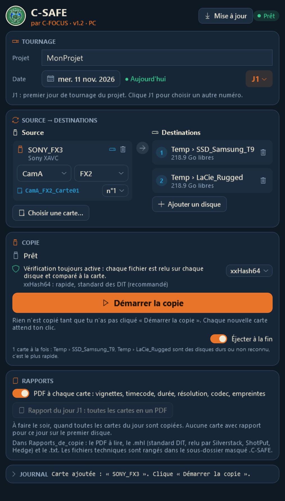

Windows 10 ou 11 (64 bits) · aucune autorisation administrateur nécessaire · gratuit
Double-clique sur le fichier reçu (ou téléchargé). L'installateur est en français.
C-SAFE n'est pas vendu dans une boutique : Windows ne le connaît pas et affiche cet écran. C'est normal.
Clique « Informations complémentaires », puis « Exécuter quand même ».
Coche « Créer une icône sur le Bureau » si tu veux, puis Installer et Terminer. C-SAFE s'ouvre et se trouve dans le menu Démarrer.
Get-FileHash C-SAFE-Setup.exeComme sur Mac : mêmes dossiers, mêmes rapports, mêmes disques.

« Ajouter un disque » : choisis chaque disque de sauvegarde (ou un dossier dessus).
Elle apparaît toute seule dans « Source ». Vérifie la caméra (CamA, CamB, SON…) et le modèle.
La carte est copiée sur les 2 disques en même temps, puis chaque fichier est relu et vérifié. Rien ne part tout seul.
Dans « Rapports_de_copie » : PDF avec vignettes et timecode, .mhl et .txt. Le soir : « Rapport du jour ».